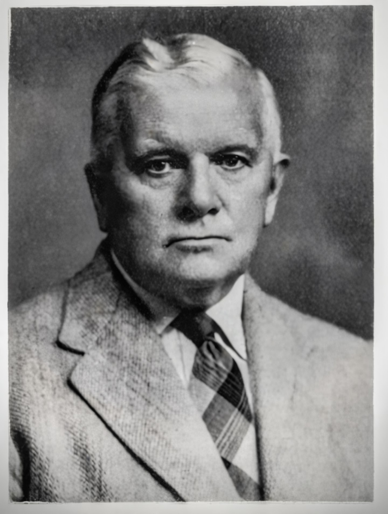

A Legacy of Medical Contribution in Northern Ireland
Born William Stafford Geddes — known to family and friends as "Billy," and professionally throughout his medical career as Stafford Geddes.
Dr. Stafford Geddes served as a prominent consultant anaesthetist during a foundational, transformative era for the specialty in Northern Ireland. Operating out of the prestigious Royal Victoria Hospital in Belfast, he was highly regarded by colleagues and surgical teams for his clinical expertise, steady hand, and technical precision in managing complex, high-risk surgical cases.
Beyond his daily theatre duties, Dr. Geddes actively contributed to early medical literature, focusing on critical care and toxicology. Notably, he published foundational work in The British Medical Journal (BMJ) regarding the clinical treatment and management of acute barbiturate poisoning—a severe and recurring medical emergency in mid-20th-century medicine.
In addition to his direct clinical impact, Dr. Geddes established a profound family legacy within international medicine. He was the father of Dr. John Stafford Geddes (1939–2024), the pioneering Northern Irish cardiologist who, alongside Professor Frank Pantridge at the Royal Victoria Hospital, co-developed the world's first mobile coronary care unit (the Belfast "Flying Squad") and revolutionized pre-hospital cardiac care with the portable defibrillator. Dr. Stafford Geddes' long-standing career and esteemed reputation at the Royal Victoria Hospital helped pave a path for this next generation of historic medical breakthrough.